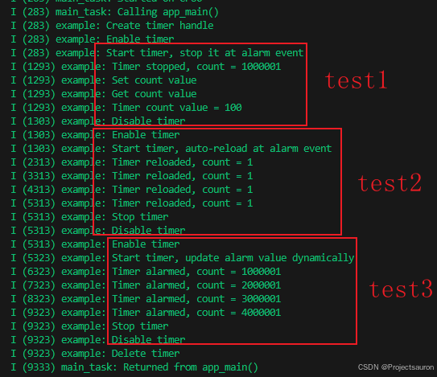

ESP32-IDF 通用定时器 GPTimer
@toc
一、基本介绍
1、配置结构体
1.1 gptimer_config_t
1 | typedef struct { |
clk_src：时钟源direction：计数方向（如递增、递减）resolution_hz：计数器分辨率（工作频率），以 Hz 为单位，因此，每个计数滴答的步长等于（1 / resolution_hz）秒intr_priority：GPTimer 中断优先级，如果设置为 0，驱动程序将尝试分配优先级相对较低的中断 （1,2,3）flagsintr_shared：设置为 1，定时器中断号可以与其他外设共享backup_before_sleep：设置为 1，驱动程序会在进入睡眠模式前备份并在恢复时恢复 GPTimer 的寄存器。这可以节省电力，但会增加 RAM 的使用。
1.2 gptimer_event_callbacks_t
一组支持 GPTimer 的回调函数。
这些回调都在 ISR 环境下运行
1 | typedef bool (*gptimer_alarm_cb_t)(gptimer_handle_t timer, const gptimer_alarm_event_data_t *edata, void *user_ctx); |
on_alarm：alarm 回调函数
补充
这个结构体保存的是 gptimer alarm 的数据：
1 | typedef struct { |
1.3 gptimer_alarm_config_t
配置 GPTimer 的 alarm
1 | typedef struct { |
alarm_count：报警触发的目标计数值。当定时器的计数器达到这个值时，将触发报警事件。reload_count：报警触发后重新加载的计数值。这个值只有在auto_reload_on_alarm被设置为 true 时才会生效，定时器会在触发报警后重新加载这个值作为新的计数值。auto_reload_on_alarm：标志位，表示是否在报警事件发生时自动重载计数值。如果设置为 true，则在触发报警后，定时器将自动将计数器的值重置为reload_count。
2、常用 API
需要包含头文件
#include "driver/gptimer.h"
2.1 gptimer_new_timer
1 | esp_err_t gptimer_new_timer(const gptimer_config_t *config, gptimer_handle_t *ret_timer) |
- 参数
config：GPTimer 配置结构体ret_timer：返回的 timer 句柄
- 作用
- 创建一个新的 GPTimer，并返回 handle。
- 返回值
ESP_OK：成功ESP_ERR_INVALID_ARG：参数无效ESP_ERR_NO_MEM：内存不足ESP_ERR_NOT_FOUND：所有硬件计时器都已用完，没有更多空闲计时器ESP_FAIL：由于其他错误
2.2 gptimer_del_timer
1 | esp_err_t gptimer_del_timer(gptimer_handle_t timer) |
- 参数
timer：timer 句柄
- 作用
- 删除 GPTimer 句柄。
- 返回值
ESP_OK：成功ESP_ERR_INVALID_ARG：参数无效ESP_ERR_INVALID_STATE：计时器未处于 init 状态ESP_FAIL：由于其他错误
计时器必须处于 “init” 状态，然后才能删除。
2.3 gptimer_set_raw_count
1 | esp_err_t gptimer_set_raw_count(gptimer_handle_t timer, uint64_t value) |
- 参数
timer：timer 句柄value：要设置的 Count 值
- 作用
- 设置 GPTimer 原始计数值。
- 返回值
ESP_OK：成功ESP_ERR_INVALID_ARG：参数无效ESP_FAIL：由于其他错误
- 当更新活动计时器的原始计数时，计时器将立即开始从新值开始计数。
- 允许此函数在 ISR 上下文中运行
2.4 gptimer_get_raw_count
1 | esp_err_t gptimer_get_raw_count(gptimer_handle_t timer, uint64_t *value) |
- 参数
timer：timer 句柄value：保存获取的 Count 值
- 作用
- 获取 GPTimer 原始计数值。
- 返回值
ESP_OK：成功ESP_ERR_INVALID_ARG：参数无效ESP_FAIL：由于其他错误
- 使用原始计数值和从
gptimer_get_resolution返回的分辨率，您可以将计数值转换为秒。- 此函数将触发软件捕获事件，然后返回捕获的计数值。
- 允许此函数在 ISR 上下文中运行
2.5 gptimer_get_resolution
1 | esp_err_t gptimer_get_resolution(gptimer_handle_t timer, uint32_t *out_resolution) |
- 参数
timer：timer 句柄out_resolution：返回的计时器分辨率，以 Hz 为单位
- 作用
- 返回计时器的实际分辨率。
- 返回值
ESP_OK：成功ESP_ERR_INVALID_ARG：参数无效ESP_FAIL：由于其他错误
通常 timer 分辨率与您在
gptimer_config_t::resolution_hz配置的相同，但一些不稳定的 clock source （例如 RC_FAST） 会进行校准，实际分辨率可能与配置的分辨率不同。
2.6 gptimer_get_captured_count
1 | esp_err_t gptimer_get_captured_count(gptimer_handle_t timer, uint64_t *value) |
- 参数
timer：timer 句柄value：保存捕获到的 count 值
- 作用
- 获取 GPTimer 捕获到的 count 值
- 返回值
ESP_OK：成功ESP_ERR_INVALID_ARG：参数无效ESP_FAIL：由于其他错误
2.7 gptimer_register_event_callbacks
1 | esp_err_t gptimer_register_event_callbacks(gptimer_handle_t timer, const gptimer_event_callbacks_t *cbs, void *user_data) |
- 参数
timer：timer 句柄cbs：回调函数组user_data：用户数据，将直接传递给回调函数
- 作用
- 设置 GPTimer 回调函数
- 返回值
ESP_OK：成功ESP_ERR_INVALID_ARG：参数无效ESP_ERR_INVALID_STATE：设置事件回调失败，因为计时器未处于 init 状态ESP_FAIL：由于其他错误
- 用户注册的回调应在 ISR 上下文中运行
- 对此函数的第一次调用需要在调用
gptimer_enable之前- 用户可以通过调用此函数并将 cbs 结构中的 callback 成员设置为 NULL 来取消注册之前注册的回调。
2.8 gptimer_set_alarm_action
1 | esp_err_t gptimer_set_alarm_action(gptimer_handle_t timer, const gptimer_alarm_config_t *config) |
- 参数
timer：timer 句柄config：alarm 配置，特别是将 config 设置为 NULL 意味着关闭 alarm 功能
- 作用
- 设置 GPTimer alarm 事件操作
- 返回值
ESP_OK：成功ESP_ERR_INVALID_ARG：参数无效ESP_FAIL：由于其他错误
- 该功能允许在 ISR 上下文中运行，以便用户可以立即在 ISR 回调中设置新的 alarm 动作。
2.9 gptimer_enable
1 | esp_err_t gptimer_enable(gptimer_handle_t timer) |
- 参数
timer：timer 句柄
- 作用
- 使能 GPTimer
- 返回值
ESP_OK：成功ESP_ERR_INVALID_ARG：参数无效ESP_FAIL：由于其他错误
- 此函数会将计时器状态从 “init” 转换为 “enable”。
- 启用计时器并不意味着启动它。另请参阅
gptimer_start了解如何使计时器开始计数。
2.10 gptimer_disable
1 | esp_err_t gptimer_disable(gptimer_handle_t timer) |
- 参数
timer：timer 句柄
- 作用
- 禁用 GPTimer
- 返回值
ESP_OK：成功ESP_ERR_INVALID_ARG：参数无效ESP_ERR_INVALID_STATE：禁用 GPTimer 失败，因为计时器尚未启用ESP_FAIL：由于其他错误
- 此函数会将计时器状态从 “enable” 转换为 “init”。
- 如果安装了中断服务，此功能将禁用中断服务。
- 禁用计时器并不意味着停止它。另请参阅
gptimer_stop了解如何使计时器停止计数。
2.11 gptimer_start
1 | esp_err_t gptimer_start(gptimer_handle_t timer) |
- 参数
timer：timer 句柄
- 作用
- 启动 GPTimer
- 返回值
ESP_OK：成功ESP_ERR_INVALID_ARG：参数无效ESP_ERR_INVALID_STATE：启动 GPTimer 失败，因为计时器未启用或已在运行ESP_FAIL：由于其他错误
- 此函数会将计时器状态从 “enable” 转换为 “init”。
- 如果安装了中断服务，此功能将禁用中断服务。
- 禁用计时器并不意味着停止它。另请参阅
gptimer_stop了解如何使计时器停止计数。
- 此函数会将计时器状态从 “enable” 转换为 “run”。
- 允许此函数在 ISR 上下文中运行
2.12 gptimer_stop
1 | esp_err_t gptimer_stop(gptimer_handle_t timer) |
- 参数
timer：timer 句柄
- 作用
- 停止 GPTimer（内部计数器停止计数）
- 返回值
ESP_OK：成功ESP_ERR_INVALID_ARG：参数无效ESP_ERR_INVALID_STATE：停止 GPTimer 失败，因为计时器未运行。ESP_FAIL：由于其他错误
- 此函数会将计时器状态从 “run” 转换为 “enable”。
- 允许此函数在 ISR 上下文中运行
3、枚举类型
见文件：esp-idf/components/esp_driver_gptimer/include/driver/gptimer_types.h、esp-idf/components/hal/include/hal/timer_types.h。
3.1 gptimer_clock_source_t
设置时钟源。
1 | typedef soc_periph_gptimer_clk_src_t gptimer_clock_source_t; |
3.2 gptimer_count_direction_t
设置计数方向。
1 | typedef enum { |
3.3 gptimer_etm_task_type_t
表示 GPTimer 特定任务，支持 ETM 模块。
1 | typedef enum { |
3.4 gptimer_etm_event_type_t
表示 GPTimer 特定事件，支持 ETM 模块。
1 | typedef enum { |
二、GTIM 配置
通用定时器是 ESP32-C3 定时器组外设的驱动程序。ESP32-C3 硬件定时器分辨率高，具有灵活的报警功能。定时器内部计数器达到特定目标数值的行为被称为定时器报警。定时器报警时将调用用户注册的不同定时器回调函数。
通用定时器通常在以下场景中使用：
- 如同挂钟一般自由运行，随时随地获取高分辨率时间戳；
- 生成周期性警报，定期触发事件；
- 生成一次性警报，在目标时间内响应。
配置和操作定时器的常规步骤如下：
- 资源分配 - 获取定时器句柄应设置的参数，以及如何在通用定时器完成工作时回收资源。
- 设置和获取计数值 - 如何强制定时器从起点开始计数，以及如何随时获取计数值。
- 设置警报动作 - 启动警报事件应设置的参数。
- 注册事件回调函数 - 如何将用户的特定代码挂载到警报事件回调函数。
- 使能和禁用定时器 - 如何使能和禁用定时器。
- 启动和停止定时器 - 通过不同报警行为启动定时器的典型使用场景。
- 电源管理 - 选择不同的时钟源将会如何影响功耗。
- 线程安全 - 驱动程序保证哪些 API 线程安全。
1、资源分配
通用定时器实例由 gptimer_handle_t 表示。可用硬件资源汇集在资源池内，由后台驱动程序管理，无需考虑硬件所属的定时器以及定时器组。
要安装一个定时器实例，需要提前提供配置结构体 gptimer_config_t。完成结构配置之后，可以将结构传递给 gptimer_new_timer()，用以实例化定时器实例并返回定时器句柄。
如已不再需要之前创建的通用定时器实例，应通过调用 gptimer_del_timer() 回收定时器，以便底层硬件定时器用于其他目的。在删除通用定时器句柄之前，请通过 gptimer_disable() 禁用定时器，或者通过 gptimer_enable() 确认定时器尚未使能。
下例中创建了一个分辨率为 1 MHz 的通用定时器句柄：
1 | gptimer_handle_t gptimer = NULL; |
2、设置和获取计数值
创建通用定时器时，内部计数器将默认重置为==零==。计数值可以通过 gptimer_set_raw_count() 异步更新。当更新活动定时器的原始计数值时，定时器将立即从新值开始计数。
最大计数值取决于硬件定时器的位宽，这也会在 SOC 宏
SOC_TIMER_GROUP_COUNTER_BIT_WIDTH中有所反映。
计数值可以随时通过 gptimer_get_raw_count() 获取。
3、设置警报动作
对于大多数通用定时器使用场景而言，应在==启动定时器之前==设置警报动作，但不包括简单的挂钟场景，该场景仅需自由运行的定时器。设置警报动作，需要根据如何使用警报事件来配置 gptimer_alarm_config_t 的不同参数。
要使警报配置生效，需要调用 gptimer_set_alarm_action()。特别是当 gptimer_alarm_config_t 设置为 NULL 时，报警功能将被禁用。
如果警报值已设置且定时器超过该值，则会立即触发警报。
4、注册事件回调函数
定时器启动后，可动态产生特定事件（如“警报事件”）。如需在事件发生时调用某些函数，则通过 gptimer_register_event_callbacks() 将函数挂载到中断服务例程 (ISR)。
也可以通过参数 user_data，将自己的上下文保存到 gptimer_register_event_callbacks() 中。用户数据将直接传递给回调函数。
注意，此功能将为定时器延迟安装中断服务，但不使能中断服务。所以，请在
gptimer_enable()之前调用这一函数，否则将返回ESP_ERR_INVALID_STATE错误。
1 | 在这里插入代码片 |
5、使能和禁用定时器
在对定时器进行 IO 控制之前，需要先调用 gptimer_enable() 使能定时器。它把定时器驱动程序的状态从 init 切换为 enable。如果 gptimer_register_event_callbacks() 已经延迟安装中断服务，此函数将使能中断服务。
调用 gptimer_disable() 会进行相反的操作，即将定时器驱动程序恢复到 init 状态，禁用中断服务并释放电源管理锁。
6、启动和停止定时器
启动和停止是定时器的基本 IO 操作。调用 gptimer_start() 可以使内部计数器开始工作，而 gptimer_stop() 可以使计数器停止工作。下文说明了如何在存在或不存在警报事件的情况下启动定时器。
注意，确保 start 和 stop 函数成对使用，否则，函数可能返回
ESP_ERR_INVALID_STATE。
7、电源管理
有些电源管理的策略会在某些时刻关闭时钟源，或者改变时钟源的频率，以求降低功耗。比如在启用 DFS 后，APB 时钟源会降低频率。如果浅睡眠 (Light-sleep) 模式也被开启，PLL 和 XTAL 时钟都会被默认关闭，从而导致 GPTimer 的计时不准确。
驱动程序会根据具体的时钟源选择，通过创建不同的电源锁来避免上述情况的发生。驱动会在 gptimer_enable() 函数中增加电源锁的引用计数，并在 gptimer_disable() 函数中减少电源锁的引用计数，从而保证了在 gptimer_enable() 和 gptimer_disable() 之间，GPTimer 的时钟源始处于稳定工作的状态。
8、线程安全
驱动提供的所有 API 都是线程安全的。使用时，可以直接从不同的 RTOS 任务中调用此类函数，无需额外锁保护。以下这些函数还支持在中断上下文中运行。
gptimer_start()gptimer_stop()gptimer_get_raw_count()gptimer_set_raw_count()gptimer_get_captured_count()gptimer_set_alarm_action()
三、实例操作
下面通过一段代码演示 gptimer 的一些基本用法。
1、核心代码讲解
首先初始化 gtimer，得到 timer 句柄：
1 | gptimer_handle_t gptimer = NULL; |
第一个例子我们创建一个 alarm 回调函数，并回调函数中关闭 gptimer：
1 | static bool example_timer_on_alarm_cb_v1(gptimer_handle_t timer, const gptimer_alarm_event_data_t *edata, void *user_data) |
第二个例子演示了 alarm 的自动重装载，核心代码如下：
1 | gptimer_alarm_config_t alarm_config2 = { |
第三个例子是在 alarm 回调函数中动态地修改 alarm 的值：
1 | gptimer_alarm_config_t alarm_config = { |
2、完整代码和效果演示
1 | static const char *TAG = "example"; |
